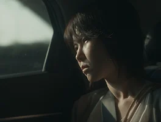

매거진 삼삼오오 · 프리뷰
다른 것으로 알려질 뿐이지
그건 정말 진짜야. 순서가 바뀐 것뿐이야.

그건 정말 진짜야. 순서가 바뀐 것뿐이야.
여자 B는 남자 X를 사랑하면서도 남자 Y를 곁에 두고 있다. 여자 A는 남자 X를 사랑했지만 더 이상 남자 X와 만나지 않는다. 여자 C는 남자 X를 사랑하고 있다. 이것은 어떤 영화의 관계도를 문장들로 표현한 것이다. 아니. 진짜일까? 이 글을 쓴 필자가 잘못 알고 있는 것이 아닐까? 이 사람이 표현하는 관계보다 더 복잡한 관계가 있는 것이 아닐까? 혹은 이 모든 것이 거짓말이 아닐까? 그럴지도 모른다. 이것은, 지금부터 내가 소개하려고 하는 영화에 대한 줄거리...일 수도 있고, 아닐 수도 있다. 아니면, 전혀 다른 영화의 스토리일지도 모른다. 혹은, 정말 이 모든 게 아무것도 아닌 농담과도 같은 것일지도 모른다.
<다른 것으로 알려질 뿐이지>는 <이어지는 땅>을 만든 조희영 감독의 신작이다. <이어지는 땅>은 우연으로 가득한 관계들을 그저 관망하는 듯한 태도로 그려내며, 그러한 순간들을 통해 일종의 흥미로운 패턴을 만들어내는 재밌는 형식의 데뷔작이었다. 그런 <이어지는 땅>을 넘어 <다른 것으로 알려질 뿐이지>는 마치 인물이라는 붓을 통해 선을 그려내고 동일한 상황의 반복과 교묘한 시점 변화를 줌으로써 마치 추상화를 보는 것과 같은 즐거움을 준다. 그것은 비슷한 방식으로 일상의 낯선 모습과 우연의 순간을 반복의 구조로 그려내어 보는 이에게 지적인 재미를 주었던 홍상수의 영화와는 또 다른 느낌이다.
영화가 찬찬히 진행되고 이야기의 흐름과 인물 관계가 어느 정도 머릿속에 잡힐 때쯤, 그것은 유리가 깨지듯 자기 자신을 산산이 부서뜨린다. 그 파편들은 서로 뒤섞여 순서와 형태가 다소 뒤바뀐 채로 배열된다. 그리고 가 쪽으로 밀려 있던 한 인물(정호)이 중심으로 가고, 우리는 구체적으로 그려지지 않던 그가 이 영화의 주인공이라는 것을 깨닫는다. 인물들은 정호를 중심으로 그 주변을 맴돌며 스치고, 또 마주친다. 모두가 정호와 그 주변에 관한 퍼즐 조각을 들고 서로 맞추려 하지만 맞춰지지 않는다. “그건 정말 진짜야. 순서가 바뀌었을 뿐이야.” 영화의 한 인물이 이렇게 말한다. 과연 그럴까? 그 퍼즐 조각들은 정호를 향한 적확한 파편들일까, 혹은 완전히 다른 어떤 것일까. 그것들은 정말로 진짜(진실)일까. 그것은 그 누구도 모른다. 결국 모두 다른 것으로 알려질 뿐이다.
-오오극장 관객프로그래머 김건우